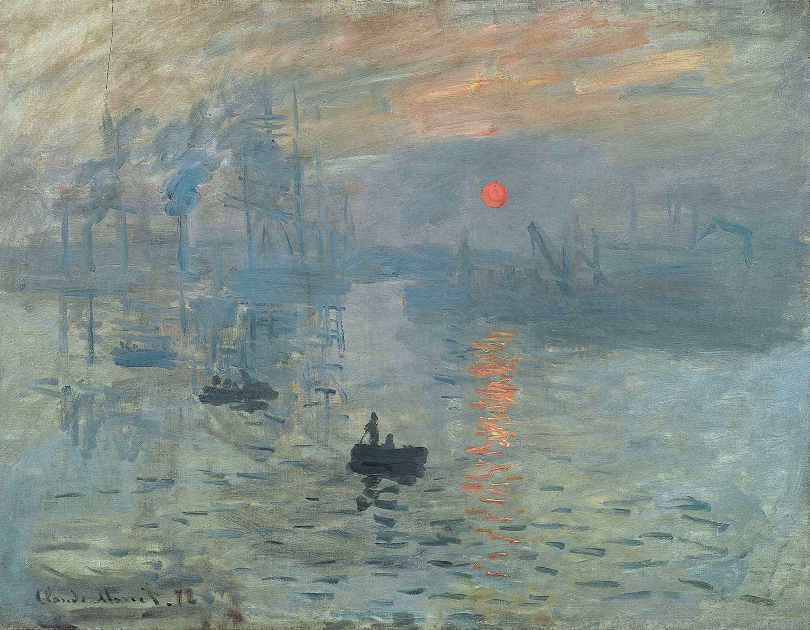

Sterling Fine Arts, Inc.
Fine art research, appraisal & private sales

Services
Sourcing and placing fine art paintings and sculpture for collectors, institutions, and corporations.
Representing works for sale with vetted private clients, institutional entities, and auction companies.
Fine art appraisals for private collectors, art institutions, corporations, legal entities, auction companies, and antique dealers, grounded in critical analysis of values and market trends.
Provenance, exhibition history, and market research, including the Artist Research Atlas, our free research project.
Negotiating, drafting, and perfecting the contracts behind each transaction, ensuring compliance and mutual benefit.
About
John Finnegan, Esq. is Managing Director of Sterling Fine Arts, Inc., with three decades of experience in the fine art industry. He leads the firm’s acquisition, consignment, and sales of fine art paintings and sculpture, and brings his legal background to every transaction, ensuring a seamless and transparent process for all stakeholders.
Previously he was Director of Business Development at ArtBanc International in London, sourcing and acquiring masterworks from European and American collections. Earlier, in New Orleans, he directed Sterling Fine Art Research & Appraisal (1998–2013) and served as a fine art specialist at M.S. Rau Antiques. He trained in law at the University of Plymouth and spent a year in Florence studying the restoration of painting and sculpture at the Istituto per l’Arte e il Restauro, the Institute for Art and Restoration housed in Palazzo Spinelli. During his New Orleans years he served for fifteen years as a consultant to the New Orleans Conservation Guild, and as an advisor on the International Committee of the Florence Biennale Internazionale dell’Antiquariato.
Research Project
For any artist, the Atlas gathers the verifiable record — life, works, exhibitions, writings, and market — from open sources, and cites every statement so each claim can be checked. A project of Sterling Fine Art Research and Appraisal.
Contact
Click to display name and email
Portland & Seattle